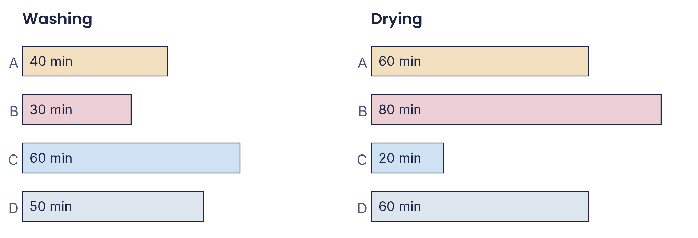
Lecture IV: Scheduling
Programming: Everyday Decision-Making Algorithms
Today in one sentence
There is no single best order for your tasks: first decide what you want to achieve, and the right rule follows.
Why it matters
Monday morning, ten tasks on your list: where do you start? Companies face the same question at scale: which order on the production line, which customer order first, which project gets the team this week.
Roadmap
- The basics: when order matters, and when it doesn’t
- Your goal decides the rule: deadlines, waiting time, value
- Real life: dependencies, interruptions and thrashing
The basics: when order matters, and when it doesn’t
Four loads of laundry, one washer, one dryer
Notes
Topic: understanding scheduling problems and algorithmic solutions for optimal task ordering. Why this matters: every day you make scheduling decisions, from organizing your to-do list to managing projects. Today we learn the mathematical algorithms that can optimize these decisions.
Old agenda: scheduling fundamentals (Johnson’s rule and two-machine problems), historical context, core algorithms (EDD for deadlines, SPT for efficiency), advanced topics (dependencies, real-time scheduling, thrashing).
Goal: all laundry done as early as possible
Task Washing Drying
A 40min 60min
B 30min 80min
C 60min 20min
D 50min 60minGoal: Minimize total time for washing and drying all loads
Question: An idea how to solve this?
Johnson’s rule: shortest job first or last
Rule: To find the optimal solution:
- Find the job with shortest duration:
- If on Machine 1 → Schedule First
- If on Machine 2 → Schedule Last
- If equal → Choose randomly
- Remove job from list and repeat
Applying Johnson’s Rule
Task Washing Drying Schedule
A 40min 60min
B 30min 80min
C 60min 20min
D 50min 60minQuestion: What’s the first scheduled task?
Applying Johnson’s Rule
Task Washing Drying Schedule
A 40min 60min
B 30min 80min
C 60min 20min 4
D 50min 60min- In Task C, the dryer is the shortest task.
- It is on Machine 2 → Schedule Last
Question: What’s the next task?
Applying Johnson’s Rule
Task Washing Drying Schedule
A 40min 60min
B 30min 80min 1
C 60min 20min 4
D 50min 60min- In Task B, the washing machine is the shortest task.
- It is on Machine 1 → Schedule First
Question: What’s the next task?
Applying Johnson’s Rule
Task Washing Drying Schedule
A 40min 60min 2
B 30min 80min 1
C 60min 20min 4
D 50min 60min- In Task A, the washing machine is the shortest task.
- It is on Machine 1 → Schedule Second
Now, we only have one task left!
Applying Johnson’s Rule
Task Washing Drying Schedule
A 40min 60min 2
B 30min 80min 1
C 60min 20min 4
D 50min 60min 3Final sequence: B A D C
Optimal Solution
Optimal Solution: B A D C
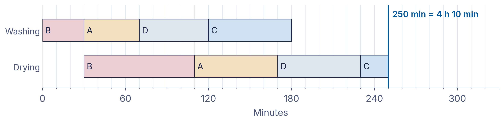
Total time: 4 hours 10 minutes
Question: Is there a worse solution?
Suboptimal Solution
Suboptimal Solution: C D A B
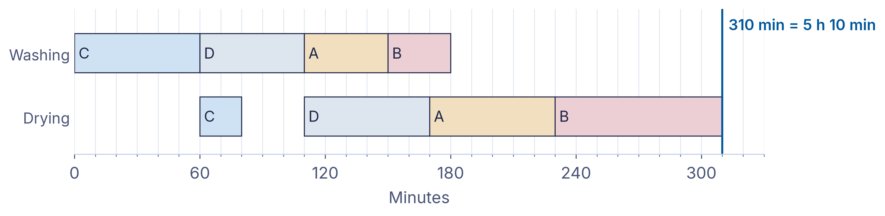
Total time: 5 hours 10 minutes
Question: What’s the difference?
Industrialization
- First systematic visualization by Frederick Taylor
- Henry Gantt develops the Gantt Chart around 1910
- Key tool of industrial production planning
- But no scheduling theory yet!
Question: Who knows what a Gantt Chart is?
Modern Scheduling Theory
- RAND Corporation founded (1948)
- Selmer Johnson publishes Johnson’s Rule in 1954
- Beginning of modern scheduling theory
- Many more algorithms and methods developed since
Scheduling is everywhere in professional practice
- Project management: task dependencies, resource allocation
- Software: CPU, threads, job queues
- Operations: production, supply chain
- Healthcare: patients, surgeries, staff
- Transportation: routes, crews, maintenance
Notes
Where do we see scheduling in professional practice? These are the same optimization problems that algorithms solve: in project management (task dependencies and resource allocation), software development (CPU, thread management, job queues), operations (production and supply chain optimization), healthcare (patients, surgery planning, staff allocation) and transportation (routes, crews, maintenance).
Tasks differ in time and in relationships
Question: What properties can scheduled tasks have?
mindmap
root((Task Properties))
Time-Related
Time windows
Deadlines
Start constraints
Deterministic durations
Variable durations
Stochastic durations
Relationship-Based
Predecessor relationships
Successor relationships
Dependencies
Priority levels
Resource constraints
Which tasks do you deal with?
Question: What types of tasks do you deal with most often?
One person instead of two machines
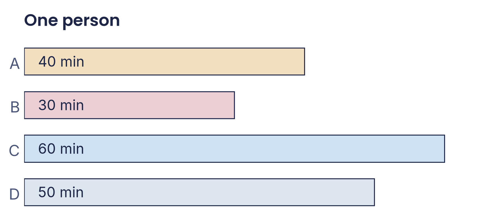
Question: What is different from before?
For total time alone, the order doesn’t matter
With one person and no deadlines, every order takes the same total time.
Question: But is it that simple?
Order becomes crucial with deadlines, priorities and dependencies.
Notes
Under simple minimization of total processing time, order doesn’t matter: the total is the sum of all durations, whatever the order. As soon as we care about deadlines, waiting time, priorities or dependencies, the order matters a lot.
The basics: when order matters, and when it doesn’t
What we covered
Sometimes the order of tasks changes the result, sometimes it doesn’t. Knowing which saves time.
Your goal decides the rule: deadlines, waiting time, value
Roadmap
- The basics: when order matters, and when it doesn’t
- Your goal decides the rule: deadlines, waiting time, value
- Real life: dependencies, interruptions and thrashing
Goal 1: nobody waits too long past the deadline
Tasks with individual deadlines:
Task Duration Deadline
A 40min 110min
B 30min 90min
C 60min 150min
D 50min 70min
E 30min 210minGoal: Minimize maximum deadline violation
Question: An idea how to solve this?
Earliest Due Date: sort by deadline
Rule: Sort the tasks by deadline (EDD).
Task Duration Deadline
A 40min 110min
B 30min 90min
C 60min 150min
D 50min 70min
E 30min 210minTask Duration Deadline
D 50min 70min
B 30min 90min
A 40min 110min
C 60min 150min
E 30min 210minLet’s visualize this!
The EDD schedule
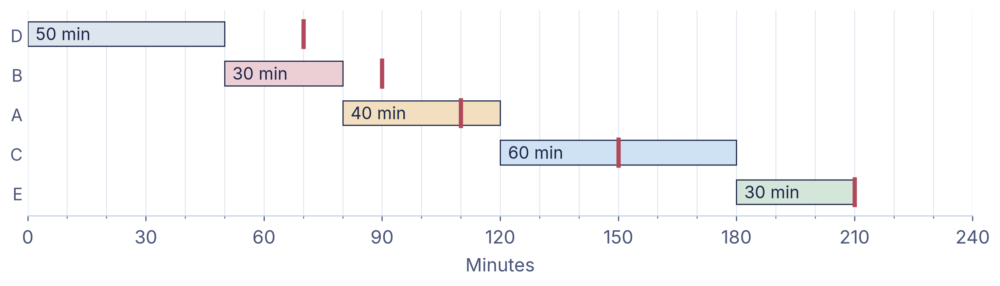
Red marks: deadlines.
Question: What’s the maximum delay here?
Goal 2: as little waiting as possible
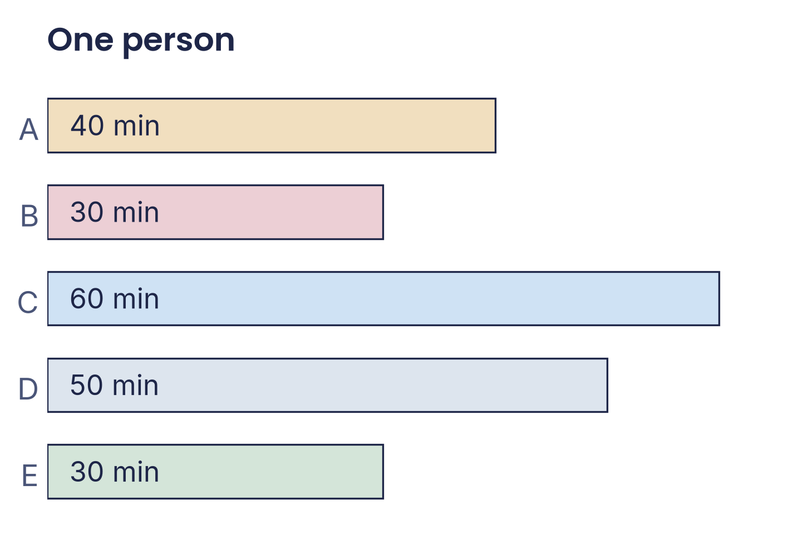
Instead of deadlines, we now have processing times.
Goal: Min. total waiting time
Question: Any ideas?
Rule: Always schedule the shortest remaining task
Shortest Processing Time: shortest task first
Rule: Always schedule the shortest remaining task. Choose random if multiple tasks are tied.
Task Duration Schedule
A 40min
B 30min
C 60min
D 50min
E 30minQuestion: What’s the order of scheduled tasks?
Shortest Processing Time: shortest task first
Rule: Always schedule the shortest remaining task. Choose random if multiple tasks are tied.
Task Duration Schedule
A 40min 3
B 30min 1
C 60min 5
D 50min 4
E 30min 2Final sequence: B E A D C or E B A D C
The SPT schedule
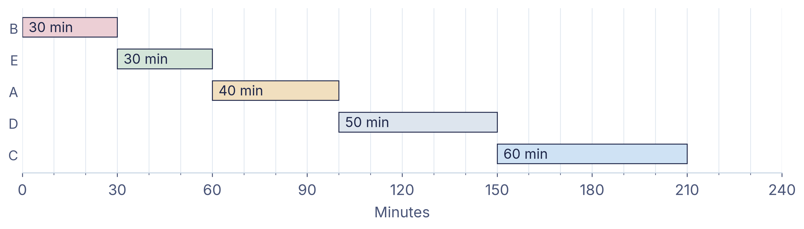
Question: Where can we see the waiting time?
Waiting time adds up to 340 minutes
Total waiting time: 340 minutes
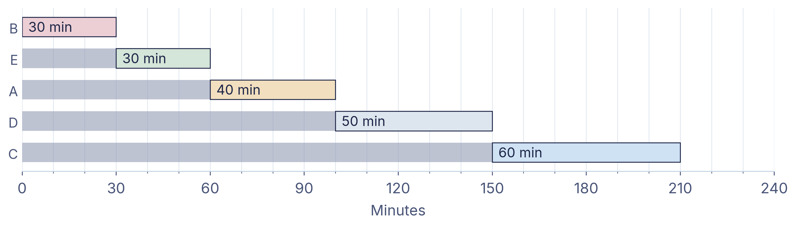
Grey: time a task waits before it starts.
Question: Would this be applicable for your work?
Goal 3: deliver the most value
- Change: Tasks now have different values, e.g. revenue for a consultant
Task Duration Revenue
A 20min €240
B 30min €200
C 60min €120
D 50min €70
E 30min €130
F 40min €120
G 20min €100
H 70min €110
I 50min €90Question: Any ideas how to approach this?
Weighted SPT: highest value per minute first
Rule: Schedule by revenue per minute (descending)
Task Duration Revenue Revenue/Min Schedule
A 20min €240 12.0
B 30min €200 6.7
C 60min €120 2.0
D 50min €70 1.4
E 30min €130 4.3
F 40min €120 3.0
G 20min €100 5.0
H 70min €110 1.6
I 50min €90 1.8Question: What’s the order of scheduled tasks?
Weighted SPT: highest value per minute first
Rule: Schedule by revenue per minute (descending)
Task Duration Revenue Revenue/Min Schedule
A 20min €240 12.0 1
B 30min €200 6.7
C 60min €120 2.0
D 50min €70 1.4
E 30min €130 4.3
F 40min €120 3.0
G 20min €100 5.0
H 70min €110 1.6
I 50min €90 1.8Weighted SPT: highest value per minute first
Rule: Schedule by revenue per minute (descending)
Task Duration Revenue Revenue/Min Schedule
A 20min €240 12.0 1
B 30min €200 6.7 2
C 60min €120 2.0
D 50min €70 1.4
E 30min €130 4.3
F 40min €120 3.0
G 20min €100 5.0
H 70min €110 1.6
I 50min €90 1.8Weighted SPT: highest value per minute first
Rule: Schedule by revenue per minute (descending)
Task Duration Revenue Revenue/Min Schedule
A 20min €240 12.0 1
B 30min €200 6.7 2
C 60min €120 2.0
D 50min €70 1.4
E 30min €130 4.3
F 40min €120 3.0
G 20min €100 5.0 3
H 70min €110 1.6
I 50min €90 1.8Weighted SPT: highest value per minute first
Rule: Schedule by revenue per minute (descending)
Task Duration Revenue Revenue/Min Schedule
A 20min €240 12.0 1
B 30min €200 6.7 2
C 60min €120 2.0
D 50min €70 1.4
E 30min €130 4.3 4
F 40min €120 3.0
G 20min €100 5.0 3
H 70min €110 1.6
I 50min €90 1.8Weighted SPT: highest value per minute first
Rule: Schedule by revenue per minute (descending)
Task Duration Revenue Revenue/Min Schedule
A 20min €240 12.0 1
B 30min €200 6.7 2
C 60min €120 2.0
D 50min €70 1.4
E 30min €130 4.3 4
F 40min €120 3.0 5
G 20min €100 5.0 3
H 70min €110 1.6
I 50min €90 1.8Weighted SPT: highest value per minute first
Rule: Schedule by revenue per minute (descending)
Task Duration Revenue Revenue/Min Schedule
A 20min €240 12.0 1
B 30min €200 6.7 2
C 60min €120 2.0 6
D 50min €70 1.4
E 30min €130 4.3 4
F 40min €120 3.0 5
G 20min €100 5.0 3
H 70min €110 1.6
I 50min €90 1.8Weighted SPT: highest value per minute first
Rule: Schedule by revenue per minute (descending)
Task Duration Revenue Revenue/Min Schedule
A 20min €240 12.0 1
B 30min €200 6.7 2
C 60min €120 2.0 6
D 50min €70 1.4
E 30min €130 4.3 4
F 40min €120 3.0 5
G 20min €100 5.0 3
H 70min €110 1.6
I 50min €90 1.8 7Weighted SPT: highest value per minute first
Rule: Schedule by revenue per minute (descending)
Task Duration Revenue Revenue/Min Schedule
A 20min €240 12.0 1
B 30min €200 6.7 2
C 60min €120 2.0 6
D 50min €70 1.4
E 30min €130 4.3 4
F 40min €120 3.0 5
G 20min €100 5.0 3
H 70min €110 1.6 8
I 50min €90 1.8 7Weighted SPT: highest value per minute first
Rule: Schedule by revenue per minute (descending)
Task Duration Revenue Revenue/Min Schedule
A 20min €240 12.0 1
B 30min €200 6.7 2
C 60min €120 2.0 6
D 50min €70 1.4 9
E 30min €130 4.3 4
F 40min €120 3.0 5
G 20min €100 5.0 3
H 70min €110 1.6 8
I 50min €90 1.8 7
TipMetric Priorities
Without revenues, we can use the same approach with metric priorities!
Deadlines with dependencies
Question: What was earliest due date again?
- Sort the tasks by deadline
- Now some tasks must wait for a predecessor
Task Duration Deadline Predecessor
A 40min 110min None
B 30min 90min D
C 60min 150min A
D 50min 70min None
E 30min 210min CQuestion: Any ideas how to solve this?
Lawler’s algorithm: fill the schedule from the back
Rule: We can use Lawler’s Algorithm (1968)
- Consider all tasks without successors
- Choose the one with latest deadline
- Schedule the task last
- Remove it from the network and start again
Lawler’s Applied
Task Duration Deadline Predecessor Schedule
A 40min 110min None
B 30min 90min D
C 60min 150min A
D 50min 70min None
E 30min 210min CQuestion: What’s the schedule?
Lawler’s Applied
Task Duration Deadline Predecessor Schedule
A 40min 110min None
B 30min 90min D
C 60min 150min A
D 50min 70min None
E 30min 210min C 5Lawler’s Applied
Task Duration Deadline Predecessor Schedule
A 40min 110min None
B 30min 90min D
C 60min 150min A 4
D 50min 70min None
E 30min 210min C 5Lawler’s Applied
Task Duration Deadline Predecessor Schedule
A 40min 110min None 3
B 30min 90min D
C 60min 150min A 4
D 50min 70min None
E 30min 210min C 5Lawler’s Applied
Task Duration Deadline Predecessor Schedule
A 40min 110min None 3
B 30min 90min D 2
C 60min 150min A 4
D 50min 70min None
E 30min 210min C 5Lawler’s Applied
Task Duration Deadline Predecessor Schedule
A 40min 110min None 3
B 30min 90min D 2
C 60min 150min A 4
D 50min 70min None 1
E 30min 210min C 5
TipSuccessor Tasks
Note, how all tasks become tasks without successors at some point.
The Lawler schedule
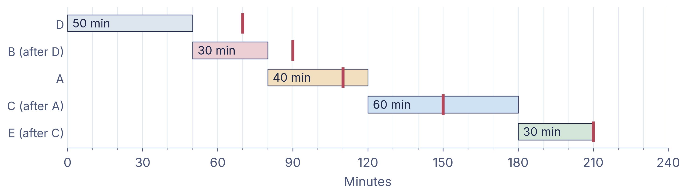
The task in brackets must be finished first. Red marks: deadlines.
Question: What’s the maximum delay?
Waiting time with dependencies has no fast exact solution
- NP-hard: no known algorithm solves it efficiently
- True for most scheduling problems
- In practice we use heuristics, good rules without a guarantee
Notes
Shortest processing time with predecessors cannot be solved in polynomial time, it is NP-hard. This is true for most scheduling problems. We can use heuristics, though: rules that give good, but not provably optimal schedules.
Your goal decides the rule: deadlines, waiting time, value
What we covered
Each goal has its own simple rule: earliest deadline first to avoid being late, shortest task first to cut waiting, highest value per minute first to maximize what you deliver.
Real life: dependencies, interruptions and thrashing
Roadmap
- The basics: when order matters, and when it doesn’t
- Your goal decides the rule: deadlines, waiting time, value
- Real life: dependencies, interruptions and thrashing
Priority inversion: an important task waits for an unimportant one
Setup (priority 1 = highest):
Task Duration Priority
A 20min 3
B 30min 1
C 30min 2
D 30min 2
E 30min 2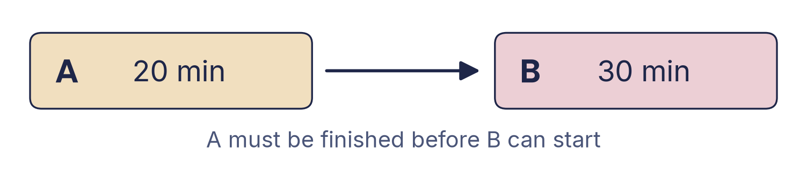
Challenge: High-priority tasks depend on low-priority tasks.
Risk: Priority inversion can lead to significant delays!
Priority inheritance: the blocker borrows the priority
Question: How do we prevent the inversion?
- Rule: Tasks inherit priority from their dependents.
- A inherits priority 1 from B and is done first
- B can start right after A, C to E follow
Task Duration Priority
A 20min 1
B 30min 1
C 30min 2
D 30min 2
E 30min 2Interruptions: new tasks arrive while you work
- In reality we cannot predict the future
- New tasks arrive while we work
- Let’s look at this for the earliest due date objective
Notes
Quick reminder: an earliest due date is a specific point in time by which a task must be completed. Under this objective, we want to minimize the maximum delay. If we have a deadline, we might need to meet it even when new tasks come in.
A morning with seven tasks
8:00-12:00 Schedule, tasks arrive during the morning:
Task Arrives Duration Deadline
Email A 8:00 20min 9:00
Create PPT 8:00 60min 10:50
Investor call 8:30 10min 9:00
Email B 8:40 30min 10:20
Liquidity 9:00 40min 11:00
Email C 9:00 20min 11:20
Email D 9:20 40min 10:00Question: How would you start, if the goal is to avoid being late?
EDD in real time: switch only for an earlier deadline
Rule:
- Always work on the task with the earliest deadline
- A new task with an earlier deadline interrupts the current one
- Otherwise, stick to the current task
Notes
Equal deadline: if a new task has the same deadline as the current task, you can choose either. But because of the cost of context switching, you should stick with the current task.
The real-time EDD schedule
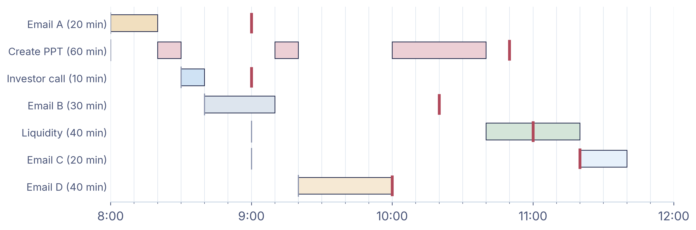
Grey line: arrival, red mark: deadline.
Question: What’s the maximum delay with this schedule?
Same morning, new goal: as little waiting as possible
Question: How would you start here?
Notes
Quick reminder: shortest processing time picks the task with the shortest duration. Under this objective, we want to minimize the total waiting time.
SPT in real time: switch only for a shorter task
Rule:
- Always work on the task with the shortest duration
- A new task that is shorter interrupts the current one
- Otherwise, stick to the current task
Notes
Equal duration: if a new task has the same duration as the current task, you can choose either. But because of the cost of context switching, you should again stick with the current task.
The real-time SPT schedule
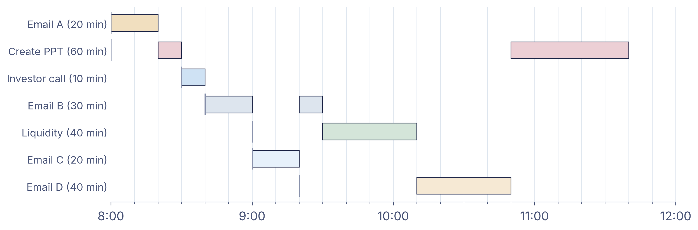
Question: Where can we see the waiting time?
The real-time SPT schedule
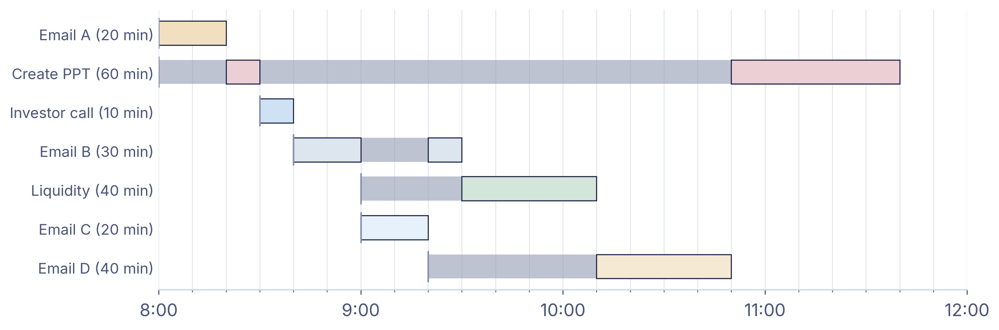
Total waiting time: 260 minutes
Thrashing: switching so much that nothing gets done
- Excessive context switching
- Organization overhead exceeds productivity
- Maximum activity, minimum output
Question: Have you ever experienced this?
Warning signs of thrashing
- Constant task switching
- Nothing getting completed
- Increasing stress levels
- Declining quality
Question: Any ideas how to prevent this?
Preventing thrashing: long-term rules
- Task rejection/delegation threshold
- Simplified organization systems
- Minimum work period rules
- Reduced reactivity requirements
Preventing thrashing: today’s tactics
- Time blocking
- Focus periods
- Task batching
- Priority freezes
Question: What strategies have worked for you?
How to use this starting today
- Daily planning: SPT for your to-do list, less waiting
- Project management: EDD when deadlines matter
- Team coordination: Johnson’s rule for two-stage processes
- Time blocking: prevent thrashing
Real life: dependencies, interruptions and thrashing
What we covered
Dependencies make planning harder, and constant switching eats up your time. Protect blocks of focused work.
What we covered
The basics: when order matters, and when it doesn’t
Sometimes the order of tasks changes the result, sometimes it doesn’t. Knowing which saves time.
Your goal decides the rule: deadlines, waiting time, value
Each goal has its own simple rule: earliest deadline first to avoid being late, shortest task first to cut waiting, highest value per minute first to maximize what you deliver.
Real life: dependencies, interruptions and thrashing
Dependencies make planning harder, and constant switching eats up your time. Protect blocks of focused work.
Why it matters
Monday morning, ten tasks on your list: where do you start? Companies face the same question at scale: which order on the production line, which customer order first, which project gets the team this week.
After the break: Scheduling
- Programming session in our new notebooks
- Today’s rules in code: dictionaries and DataFrames
- Different scheduling algorithms applied to problems
Notes
Key takeaways: scheduling algorithms provide optimal solutions to time management problems; different objectives require different algorithms; dependencies and constraints add complexity but have algorithmic solutions; thrashing prevention is crucial for productivity; these principles directly translate to programming and system design.
That’s it for scheduling! Let’s have a short break and then continue with our fourth Python programming session.
Literature
Interesting literature to start
- Christian, B., & Griffiths, T. (2016). Algorithms to live by: the computer science of human decisions. First international edition. New York, Henry Holt and Company.1
Books on Programming
- Downey, A. B. (2024). Think Python: How to think like a computer scientist (Third edition). O’Reilly. Free online
- Elter, S. (2021). Schrödinger programmiert Python: Das etwas andere Fachbuch (1. Auflage). Rheinwerk Verlag.
Think Python is free online and a great start. Schrödinger programmiert Python is a playful alternative in German.
More Literature
For more interesting literature, take a look at the literature list of this course.
Footnotes
The main inspiration for this lecture. We have read it and discussed it in depth, always wanting to translate it into a course.↩︎